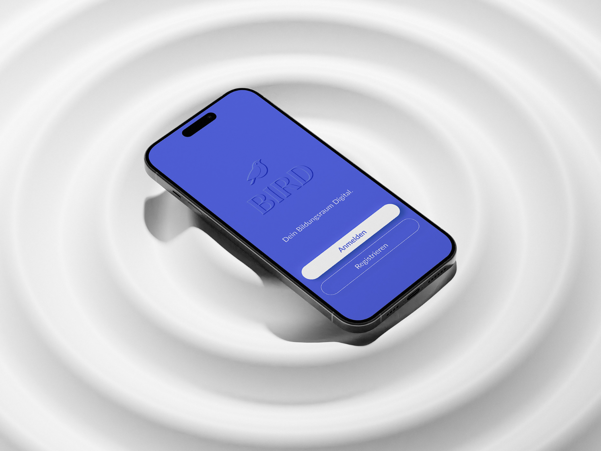
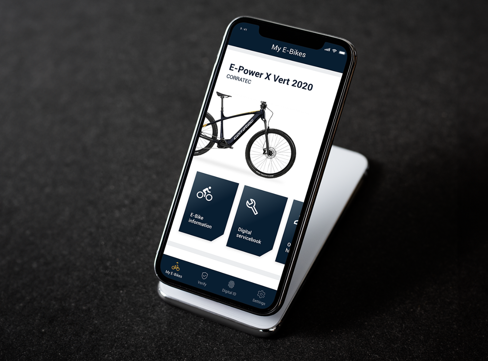
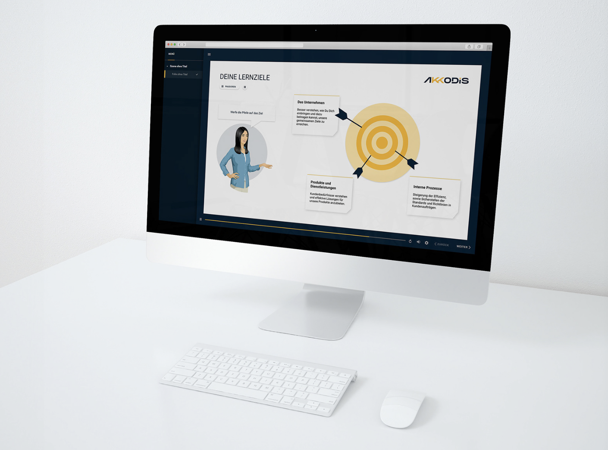

Clear, human-centered
digital experiences.
Johanna Ober
UX Design & Engineer
Product Design
UX Research
Prototyping
Interaction Design
Design Systems

Clear, human-centered
digital experiences.
UX Design & Engineer

Bloom — Shopping Redesign
End-to-end redesign of a retail app's checkout flow, reducing drop-off by 34% through progressive disclosure and inline error handling.
Show me →
Meridian Analytics
Designed a data-dense analytics dashboard with a focus on scannability — custom charting components and a token-based design system.
Show me →
CareFlow Patient Portal
Accessible patient portal for a regional hospital network. Led research, journey mapping, and high-fidelity prototyping from scratch.
Show me →
Tempo Music App
Concept exploration for a collaborative playlist app. Focused on the social layer — shared queues, reactions, and real-time listening.
Show me →
Helix Component Library
Built and documented a shared component library across four product teams — 80+ components, Figma variables, and Storybook integration.
Show me →
TerraWatch Climate Hub
Pro-bono redesign of a climate data platform. Simplified complex datasets for a broad public audience through storytelling and data visualisation.
Show me →Titanom Solutions, Germering
UX/UI Design
AI in Education Technologies
Audi AG, Ingolstadt
UX/UI Concept
Future car interaction concept "mobile first car UX"
Audi AG, Ingolstadt
UX/UI Concept
Conception of physical & digital car UI elements
AKKODIS, Sindelfingen
Graphic & UX Design
B2B & B2C software solutions
Kaleon-Media, Rosenheim
Graphic & Web Design
Inhouse & B2C projects
F&W Druck- & Mediencenter, Kienberg
Media Design & Project Management
Inhouse, B2B & B2C print products
Linköping University, Sweden
Exchange Semester
Graphic Design & Communication
Hochschule der Medien, Stuttgart
B.A. Information Design
Focus on UX/UI & Interaction Design
Berufsschulzentrum Alois Senefelder, Munich
Apprenticeship · Digital & Print Media Design
Vocational training in digital & print media design
Städtische Fachoberschule for Design, Munich
University Entrance Qualification · Design
Fachhochschulreife, Design focus
Clubs & Activities
Keyboarder in a Wedding Band
Volunteer Firefighter
Trainer in a Sport Shooting Club
Interests
Running
Hiking
Cycling
Analog Design & Handicraft